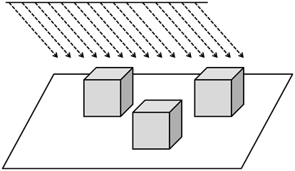
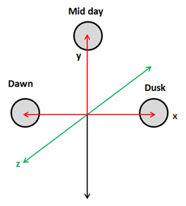
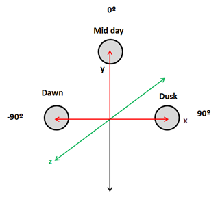
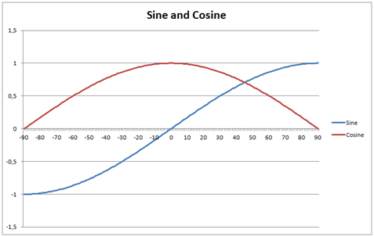
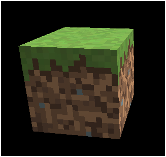
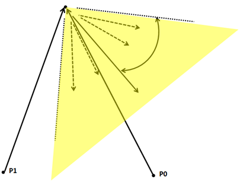
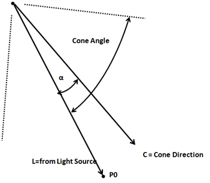
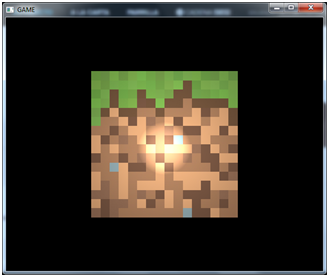
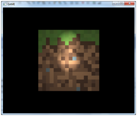

要有更多的光（Let there be even more light）
在本章中，我们将实现在前面章节中介绍的其他类型的光。我们先从平行光源开始。
平行光源
平行光照击中所有物体的平行射线都来自同一方向，因此它用来模拟遥远但具有高光强的光源，比如太阳。

平行光源的另一个特点是它不受衰减的影响。再想一想太阳光，所有被光线照射的地球上的物体都以相同强度被照射，地球上的物体离太阳的距离之大，以至于它们之间的相对位置是影响的。事实上，平行光源被定义为放在无限远处的光源，如果它受到衰减的影响，它将对任何物体都没有光照(它对颜色的影响将等于0)。
此外，平行光源也由漫反射和镜面光分量组成，与点光源的唯一区别在于它没有位置，而有方向，并且它不受衰减的影响。让我们回到平行光属性的讨论，想象我们正在模拟太阳在三维世界中运动，下图显示了黎明、正午和黄昏时的光照方向。

上述位置的照明方向为：
- 黎明:
- 正午:
- 黄昏:
注意：你可能认为上面的坐标是位置坐标，但是它们是向量，方向，而不是位置。从数学的角度来看，向量和位置是不可区分的，它们有着完全不同的含义。
但是，我们如何定义这个光位于无穷远处呢？答案是使用W坐标，也就是说，使用其次坐标然后将W坐标设置为0。
- 黎明:
- 正午:
- 黄昏:
这就像我们在使用法线时一样。对于法线，我们将W分量设置为0，表示我们对位移不感兴趣，只对方向感兴趣。此外，当我们处理平行光照时，也需要这样做，摄像机的平移不应该影响平行光照的方向。
让我们开始编写和模拟我们的方向光。我们要做的第一件事是创建一个模型来储存它的属性。它只是另一个具有复制构造函数的普通的Java对象，并储存方向、颜色和强度。
package org.lwjglb.engine.graph;
import org.joml.Vector3f;
public class DirectionalLight {
private Vector3f color;
private Vector3f direction;
private float intensity;
public DirectionalLight(Vector3f color, Vector3f direction, float intensity) {
this.color = color;
this.direction = direction;
this.intensity = intensity;
}
public DirectionalLight(DirectionalLight light) {
this(new Vector3f(light.getColor()), new Vector3f(light.getDirection()), light.getIntensity());
}
// Getters and settes beyond this point...
正如你所看到的，我们使用Vector3f来储存方向。保持冷静，当将平行光照传递到着色器时，我们将处理W分量。顺便说一个，我们接下来要做的就是更新ShaderProgram来创建和更新储存平行光照的Uniform。
在片元着色器中，我们将定义一个结构体来模拟平行光源。
struct DirectionalLight
{
vec3 colour;
vec3 direction;
float intensity;
};
在这个定义中，ShaderProgram类中的新方法也是直接了当的。
// ...
public void createDirectionalLightUniform(String uniformName) throws Exception {
createUniform(uniformName + ".colour");
createUniform(uniformName + ".direction");
createUniform(uniformName + ".intensity");
}
// ...
public void setUniform(String uniformName, DirectionalLight dirLight) {
setUniform(uniformName + ".colour", dirLight.getColor() );
setUniform(uniformName + ".direction", dirLight.getDirection());
setUniform(uniformName + ".intensity", dirLight.getIntensity());
}
我们现在需要使用Uniform。我们将通过DummyGame类控制太阳的角度来模拟它跨越天空。

我们需要更新光的方向，所以当黎明时(-90°)太阳在(-1, 0, 0)方向上，它的X坐标从-1逐渐增加到0，Y坐标逐渐从0增加到1。然后，X坐标增加到1，Y坐标又下降到0。这可以通过将X坐标设置为正弦角和Y坐标设置为余弦角来完成。

我们也会调整光照强度，当它离黎明越远，强度将越强，并且随着黄昏的临近而减弱。我们将通过设置强度为0来模拟夜晚。此外，我们还将调节颜色，使光线在黎明和黄昏时变得更红。这将在DummyGame类的update方法中实现。
// Update directional light direction, intensity and colour
lightAngle += 1.1f;
if (lightAngle > 90) {
directionalLight.setIntensity(0);
if (lightAngle >= 360) {
lightAngle = -90;
}
} else if (lightAngle <= -80 || lightAngle >= 80) {
float factor = 1 - (float)(Math.abs(lightAngle) - 80)/ 10.0f;
directionalLight.setIntensity(factor);
directionalLight.getColor().y = Math.max(factor, 0.9f);
directionalLight.getColor().z = Math.max(factor, 0.5f);
} else {
directionalLight.setIntensity(1);
directionalLight.getColor().x = 1;
directionalLight.getColor().y = 1;
directionalLight.getColor().z = 1;
}
double angRad = Math.toRadians(lightAngle);
directionalLight.getDirection().x = (float) Math.sin(angRad);
directionalLight.getDirection().y = (float) Math.cos(angRad);
然后，我们需要将平行光源传递给Renderer类中的render方法中的着色器。
// Get a copy of the directional light object and transform its position to view coordinates
DirectionalLight currDirLight = new DirectionalLight(directionalLight);
Vector4f dir = new Vector4f(currDirLight.getDirection(), 0);
dir.mul(viewMatrix);
currDirLight.setDirection(new Vector3f(dir.x, dir.y, dir.z));
shaderProgram.setUniform("directionalLight", currDirLight);
正如你所看到的，我们需要变换光照向量到观察空间，但是我们将W分量设置为0，因为我们对变换不感兴趣。
现在，我们已经准备好在片元着色器上完成剩下的工作，因为顶点着色器不需要修改。之前已经说过，我们需要定义一个名为DirectionalLight的新结构体，来储存平行光源数据，所以需要一个新的Uniform类型。
uniform DirectionalLight directionalLight;
我们需要重构代码，在前一章中，我们有一个叫做calcPointLight的函数，它负责计算漫反射和镜面反射分类，也使用衰减。但正如我们所说的，平行光照使用漫反射和镜面反射分量，但不受衰减影响，所以我们将创建一个名为calcLightColour新的函数，只计算那些内容。
vec4 calcLightColour(vec3 light_colour, float light_intensity, vec3 position, vec3 to_light_dir, vec3 normal)
{
vec4 diffuseColour = vec4(0, 0, 0, 0);
vec4 specColour = vec4(0, 0, 0, 0);
// Diffuse Light
float diffuseFactor = max(dot(normal, to_light_dir), 0.0);
diffuseColour = diffuseC * vec4(light_colour, 1.0) * light_intensity * diffuseFactor;
// Specular Light
vec3 camera_direction = normalize(camera_pos - position);
vec3 from_light_dir = -to_light_dir;
vec3 reflected_light = normalize(reflect(from_light_dir , normal));
float specularFactor = max( dot(camera_direction, reflected_light), 0.0);
specularFactor = pow(specularFactor, specularPower);
specColour = speculrC * light_intensity * specularFactor * material.reflectance * vec4(light_colour, 1.0);
return (diffuseColour + specColour);
}
然后，calcPointLight方法将衰减应用到先前函数中计算的结果。
vec4 calcPointLight(PointLight light, vec3 position, vec3 normal)
{
vec3 light_direction = light.position - position;
vec3 to_light_dir = normalize(light_direction);
vec4 light_colour = calcLightColour(light.colour, light.intensity, position, to_light_dir, normal);
// Apply Attenuation
float distance = length(light_direction);
float attenuationInv = light.att.constant + light.att.linear * distance +
light.att.exponent * distance * distance;
return light_colour / attenuationInv;
}
我们还将创建一个新的函数来计算平行光源的效果，它只调用calcLightColour方法。
vec4 calcDirectionalLight(DirectionalLight light, vec3 position, vec3 normal)
{
return calcLightColour(light.colour, light.intensity, position, normalize(light.direction), normal);
}
最后，main方法通过环境光和平行光的颜色分量来计算片元颜色。
void main()
{
setupColours(material, outTexCoord);
vec4 diffuseSpecularComp = calcDirectionalLight(directionalLight, mvVertexPos, mvVertexNormal);
diffuseSpecularComp += calcPointLight(pointLight, mvVertexPos, mvVertexNormal);
fragColor = ambientC * vec4(ambientLight, 1) + diffuseSpecularComp;
}
就是这样，现在我们可以模拟太阳在天空中的移动，就像这样(运动速度加快，不用等待太久就可以看到)。

聚光源
现在我们将实现与点光源非常相似的光源，但是它发出的光被限制在三维锥体中。它模拟从焦点或者其他不向四面八方发射光的光源。聚光源具有和点光源一样的参数，但它还增加了两个新的参数，锥角和锥方向。

聚光源与点光源的计算方法相同，但有一些不同。从顶点位置到光源的矢量不在光锥内的点不受光照的影响。

该如何计算它是否在光锥里呢？我们需要在点光源和圆锥方向矢量(它们都归一化)之间再次做数量积。

L和C向量之间的数量积等于：。在聚光源的定义中，我们储存锥角的余弦值，如果数量积高于该值，我们就知道它在光锥内部(想想余弦图，当α角为0°时，余弦将为1。在0°~180°时，角越小，余弦值越大)。
第二个区别是远离光源的点将接收更少的光，也就是说，衰减将更强。有几种计算方法，我们将选择一种简单的方法，通过将衰减与以下公式相乘：
(在片元着色器中，我们没有传递角度，而是传递角的余弦值。你可以从0~1检查上面的公式，当角度为0时，余弦值为1。)
实现非常类似于其他的光源，我们需要创建一个名为SpotLight的类，设置适当的Uniform，将其传递给着色器并修改片元着色器。你可以查看本章的源代码。
当传递Uniform时，另一个重要的事情是变换不应该应用到光锥方向上，因为我们只对方向感兴趣。因此，和平行光源的情况一样，当转换到观察矩阵空间时，必须把w值设置为0。

多光源
我们最终实现了所有类型的光源，但是目前每个类型的光源只能有一个。这对于环境光和平行光来说没问题，但是我们确实希望使用多个点光源和聚光源。我们需要修改片元着色器来接收光源列表，所以使用数组来储存这些数据。
在开始之前要注意的事情，是在GLSL中数组的长度必须在编译时设置，因此它必须足够大，以便在运行时能够容纳所有对象。第一件事情是定义一些常量来设置我们要使用的最大点光源数和聚光源数。
const int MAX_POINT_LIGHTS = 5;
const int MAX_SPOT_LIGHTS = 5;
然后我们需要修改之前只储存一个点光源和一个聚光源的Uniform为数组。
uniform PointLight pointLights[MAX_POINT_LIGHTS];
uniform SpotLight spotLights[MAX_SPOT_LIGHTS];
在main函数中，我们只需要对这些数组进行迭代，以使用现有函数计算每个对象对颜色的贡献。我们可能不会像Uniform数组长度那样传递很多光，所以需要控制它。有很多可行的方法，但这可能不适用于旧的显卡，最终我们将检查光强度(在数组中的空位的对象，光强为0)。
for (int i=0; i<MAX_POINT_LIGHTS; i++)
{
if ( pointLights[i].intensity > 0 )
{
diffuseSpecularComp += calcPointLight(pointLights[i], mvVertexPos, mvVertexNormal);
}
}
for (int i=0; i<MAX_SPOT_LIGHTS; i++)
{
if ( spotLights[i].pl.intensity > 0 )
{
diffuseSpecularComp += calcSpotLight(spotLights[i], mvVertexPos, mvVertexNormal);
}
}
现在我们需要在Render类中创建这些Uniform。当我们使用数组时，我们需要为列表中的每个元素创建一个Uniform。例如，对于pointLights数组，我们需要创建名为pointLights[0]、pointLights[1]之类的Uniform。当然，这也适用于结构体属性，所以我们将创建pointLights[0].colour、pointLights[1].colour等等。创建这些Uniform的方法如下。
public void createPointLightListUniform(String uniformName, int size) throws Exception {
for (int i = 0; i < size; i++) {
createPointLightUniform(uniformName + "[" + i + "]");
}
}
public void createSpotLightListUniform(String uniformName, int size) throws Exception {
for (int i = 0; i < size; i++) {
createSpotLightUniform(uniformName + "[" + i + "]");
}
}
我们也需要方法来设置这些Uniform的值。
public void setUniform(String uniformName, PointLight[] pointLights) {
int numLights = pointLights != null ? pointLights.length : 0;
for (int i = 0; i < numLights; i++) {
setUniform(uniformName, pointLights[i], i);
}
}
public void setUniform(String uniformName, PointLight pointLight, int pos) {
setUniform(uniformName + "[" + pos + "]", pointLight);
}
public void setUniform(String uniformName, SpotLight[] spotLights) {
int numLights = spotLights != null ? spotLights.length : 0;
for (int i = 0; i < numLights; i++) {
setUniform(uniformName, spotLights[i], i);
}
}
public void setUniform(String uniformName, SpotLight spotLight, int pos) {
setUniform(uniformName + "[" + pos + "]", spotLight);
}
最后我们只需要更新Render类来接收点光源和聚光源列表，并相应地修改DummyGame类来创建这些列表。最后看起来就像这样。
